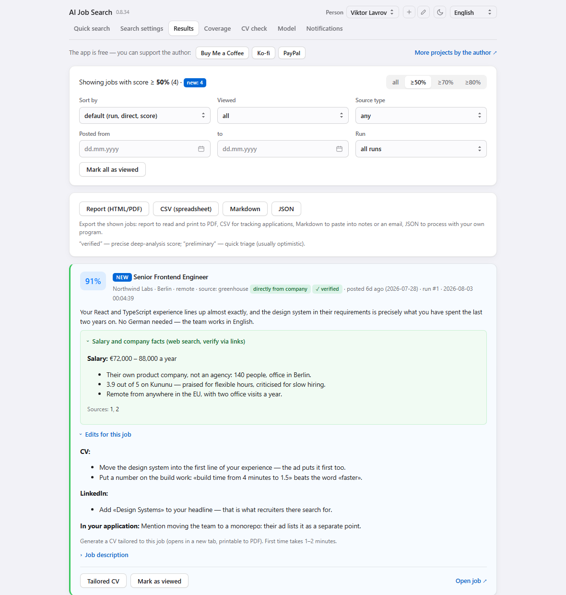
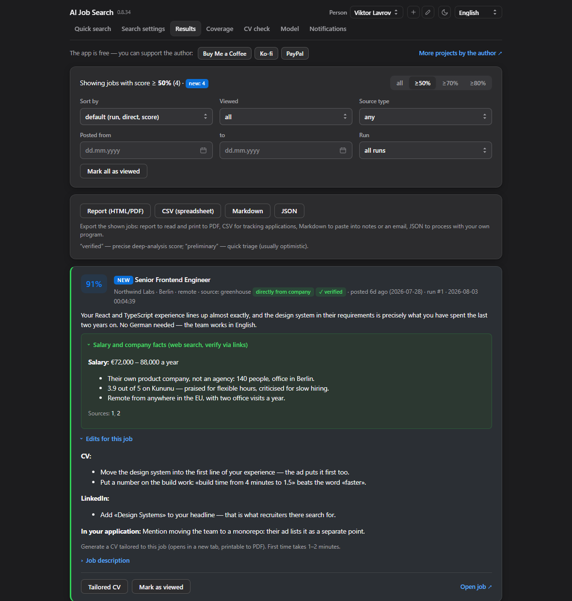
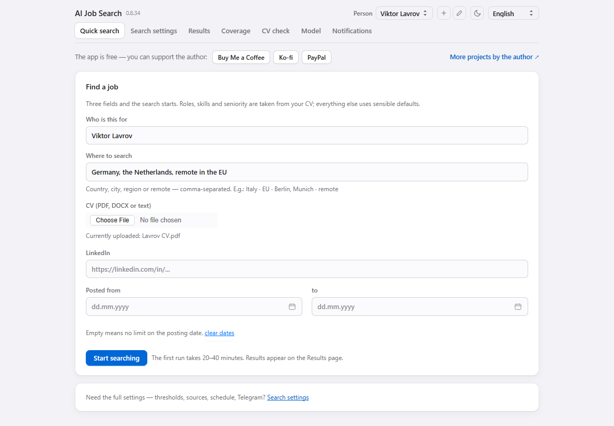
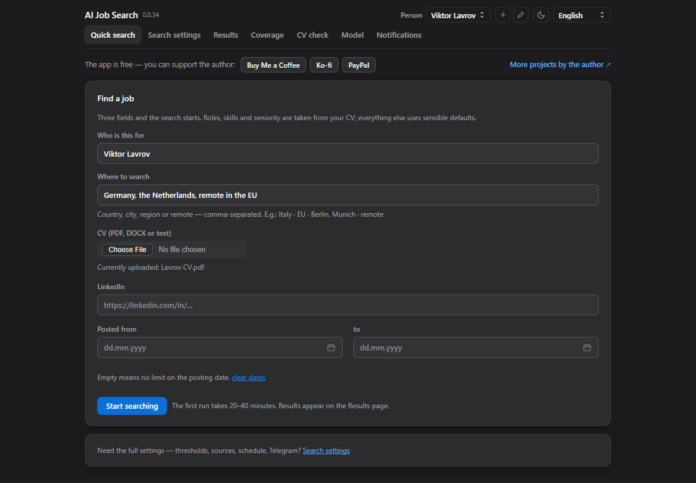
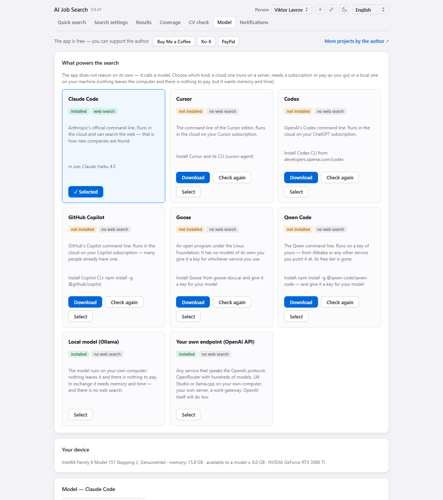
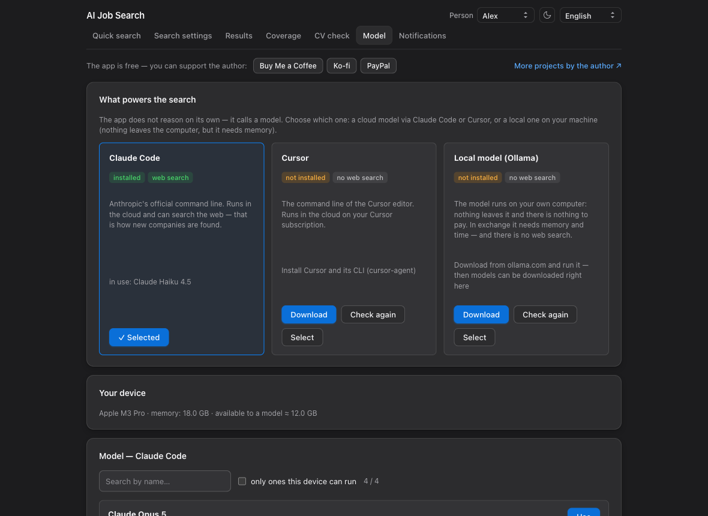

What it does
-
Looks where the jobs actually are
ATS platforms read directly through their APIs — Greenhouse, Lever, Ashby, Workable, SmartRecruiters, Recruitee, Personio — plus aggregators and the career pages of companies you name. Every run also goes looking for companies you have not heard of.
-
Scores each posting, and says why
Not keyword matching: the model compares the posting against your CV and profile and writes a sentence about the fit — what lines up, and what will get in the way. Quick scoring first, then a careful pass over the best ones.
-
Tells you what to change in the CV
For every job that clears the bar: concrete edits to the CV and the LinkedIn profile, what to lead with in the application, and a tailored CV generated for that role in one click, printable to PDF.
-
Checks the CV against the robots
Two readers stand between you and a human: the ATS parser and a person with six seconds. The app checks what a plain parser actually extracts from your file, what slows a human down, and which keywords from your target jobs are missing.
-
Sends the results to you
Telegram, email, or neither — results wait in the window. The search can keep running with the window closed, and start again by itself on a schedule.
-
Several people, one app
Each person gets their own CV, settings, company list, results and schedule. Useful when you are also helping a friend look.


How it works
-
Choose what does the thinking
The app has no model of its own. On first launch it asks which one to use: Claude Code, Cursor CLI, or a local model through Ollama. It says which are installed and opens the right download page for the one you pick.
-
Give it your CV and where to look
Three fields: who it is for, which countries or cities, and the CV file. Roles, skills and seniority are read from the CV — the rest starts on sensible defaults you can change later.
-
Leave it running
The first run takes 20–40 minutes. Jobs appear on the Results page as they are scored, with the current stage and an estimate of what is left. Close the window and it carries on.


What powers it
Either a cloud model through a command line you already pay for, or a model running on your own machine.
-
Claude Code or Cursor
Uses the subscription you already have. Claude Code can also search the web, which is how the app finds companies nobody told it about.
-
A local model with Ollama
Seventeen models to choose from, sorted by capability, each marked with whether your machine can actually run it — worked out from your memory. They download from inside the app. Nothing leaves the computer, and there is nothing to pay.


Honest about coverage
The app does not scan every company in the world. There are millions, and no service does — LinkedIn and Indeed see a fraction too. Coverage comes from three streams: aggregators, the companies on your list read in full, and the ones auto-discovery turns up each run. There is a page that shows exactly what was scanned, and a box where you can type a company name and find out whether the app can see it at all.
Where your data sits
On your computer, in the standard application-data folder: the CV, the settings, the jobs found and the history of runs. Nothing is uploaded anywhere. The text of your CV goes to the model you chose and to nothing else — and with a local model, not even there.
Free and open source, MIT.
Fourteen languages
Arabic, Chinese, English, French, German, Hindi, Italian, Japanese, Polish, Portuguese, Russian, Spanish, Turkish and Ukrainian — right to left where that is how the language reads. The language the AI writes in is chosen separately: you can read the interface in one language and get the CV edits in another, which is the normal case when applying abroad.
What's next
A signed Windows build, so it stops tripping SmartScreen the way the macOS one used to trip Gatekeeper. Then the signing moves into the release pipeline, so every future version arrives notarised without anyone remembering to do it by hand.
Ideas welcome.